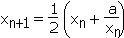
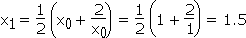
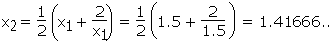
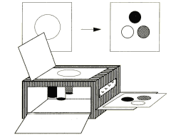
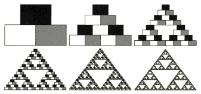
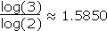
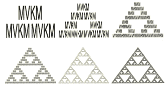

|
| [1.1. Wichtige strukturelle Merkmale] |
| [1.2. Erzeugung von Grenzobjekten] |
Um das Konzept der L-Systeme erklären zu können, muss der Leser mit dem Begriff Fraktal vertraut sein, da es sich hier ausschließlich um solche -nämlich fraktale- Strukturen handelt.
Das Wort selbst wurde in den sechziger-Jahren vom französischen Mathematiker Benoit B. Mandelbrot eingeführt (dem Leser ist vielleicht die "Mandelbrot-Menge" oder das "Apfelmännchen", das die erste vom Computer dargestellte fraktale Grenzmenge ist, ein Begriff). Er leitete es vom lateinischen Verb "frangere" und vom zugehörigen Adjektiv "fractal" ab. Das Verb bedeutet brechen, Fragmente bilden. Beispiele aus der Natur sind z.B. Küstenlinien, Wolken oder Organe wie die Lunge. Tatsächlich ist ein Großteil der Natur aus Fraktalen aufgebaut. Sie stehen in enger Verbindung mit der sogenannten Chaostheorie.
Dieser relativ moderne wissenschaftliche Zweig existiert erst seit Mandelbrots ersten Versuchen mit dem Computer, da die Erzeugung eines Fraktals viele Berechnungen und eine grafische Darstellung mit sich führt und erst seit der Einführung des Computers in den 60er Jahren dieser als Medium dient und der modernen Chaosforschung damals den Grundstein legte.
Durch die stetige Verbesserung der Rechenleistung gibt es heutzutage unzählige Programme, die jedem Laien die Möglichkeit, auf dem eigenen PC Fraktale in wenigen Sekunden darzustellen, bieten, ohne auch nur irgendetwas über die dahinterstehenden Algorithmen zu wissen.
Fraktale sind zwar schon seit den bedeutenden Vorreitern wie Giuseppe Peano, David Hilbert, Georg Cantor, usw. -also seit mehr als 100 Jahren- bekannt, fanden aber zu dieser Zeit mangels Berechnung und Visualisierung keinen Durchbruch.
 |
1.1. Wichtige strukturelle Merkmale |
|
"When each piece of a shape is geometrically similar to the whole, both the shape and the cascade that generate it are called self-similar." (aus [1] Seite v)
Absolutwerte sind irrelevant; ein Fraktal kann theoretisch unendlich oft vergrößert werden, ohne dass eine Veränderung der Form bemerkbar wird. (Da Fraktale kompakte -also endlich ausgedehnte- Objekte sind, gibt es eine Grenze bei Verkleinerungen.)
Da das Fraktal nicht einen Teil der Ebene bzw. des Raumes voll ausfüllt (bis auf ein paar Ausnahmen wie z.B. die Peano- oder FASS-Kurven, die flächen-, bzw. raumfüllend sind, (siehe Kapitel 2.3.4.)) spricht man von einer gebrochenen oder fraktalen Dimension, die nicht ganzzahlig ist. Es gibt verschiedenste Methoden, diese Dimension zu messen, diese sind aber nicht Gegenstand dieser Arbeit und sollen daher nicht weiter erläutert werden. (Eine kurze Erklärung zum Dimensionsbegriff findet sich in Kapitel 1.2.2.)
Eine für Laien aber auch Fortgeschrittene verständliche und umfassendere Einführung in die Welt der Fraktale bieten die hervorragenden Bücher [2] und [3].
|
1.2. Erzeugung von Grenzobjekten |
 |
Es gibt viele Möglichkeiten, ein Fraktal zu erzeugen; doch alle beinhalten das gleiche Prinzip: Rückkopplung.
Solche Erzeugungssysteme sind auch immer iterativ und rekursiv (lat. iterare=etwas wiederholen; recurrere=zurücklaufen); d.h. Fraktale entstehen durch Wiederholung bzw. Ersetzung in unendlich vielen Durchläufen oder Iterationen einer bestimmten Schleife mit vorgegeben Formeln.
Der Begriff der Rückkopplung ist vielen in Beziehung mit Tontechnik bekannt; dort entsteht sie, wenn z.B. ein Mikrofon zu nahe an eine an das Mikrofon angeschlossene Lautsprecheranlage gehalten wird. Ein beliebig leises Geräusch wird vom Mikrofon aufgenommen und verstärkt aus der Anlage wiedergegeben. Das verstärkte Signal wird wiederum verstärkt, bis es nach ein paar Durchläufen die höchstmögliche Lautstärke (in einem unangenehmen Pfeifton) erreicht hat.
Ebenso ist das Filmen eines Bildschirmes, der auf sich selbst abgebildet wird, ein rückgekoppelter Vorgang, der einen Bildschirm im Bildschirm im Bildschirm usw. erzeugt.
Die Ein-Schritt-Rückkopplungsmaschine (siehe Abb. 1.2) wird durch eine Iterationsformel xn+1 = ƒ(xn) gekennzeichnet, wobei ƒ(x) irgendeine Funktion von x sein kann. Es wird eine Zahl als Eingabe (engl: Input) benötigt, die in jedem Schritt durch die Funktion ersetzt wird und die Ausgabe (engl: Output) liefert. Diese wird im nächsten Schleifendurchlauf als Input verwendet -was der eigentliche Vorgang der Rückkopplung ist- und wieder ein Output daraus berechnet.
Diese Folge kann divergieren (also als Endergebnis ∞ oder -∞ liefern), oder zu einem Grenzwert konvergieren.
(Weiters besteht die Möglichkeit, dass die Funktion zu mehreren Grenzwerten konvergiert und im Endzustand zwischen diesen hin- und herpendelt; die Anzahl dieser Werte, die von bestimmten Bedingungen abhängig sind, verdoppeln sich bei deren Veränderung -Bifurkation oder Periodenverdopplung genannt- und sind bei chaotischen Systemen unendlich groß.)
Ein Beispiel für eine konvergente Folge ist die Methode der Quadratwurzelberechnung, die als erste den Sumerern vor ca. 4000 Jahren bekannt war und heutzutage in ähnlicher Form als Newton-Verfahren für die Lösung von nichtlinearen Gleichungen bekannt ist:
Gegeben sei a>0. Man berechne die Folge x1,x2,x3,... so, dass der Grenzwert
Diese rekursive Formel lautet: 
Betrachten wir z.B. die Wurzel von 2 (=1.4142135623..). Wir schätzen zunächst eine grobe Näherung für

und
usw.
Da in jedem Schritt die Anzahl korrekter Ziffern fast verdoppelt wird, nähern sich die Zwischenergebnisse dem gesuchten Wert ziemlich rasch.
Es gibt natürlich auch Zwei- (und mehr) Schritt-Verfahren, bei denen nicht nur xn sondern auch xn-1, xn-2 usw. in jeder Iteration berücksichtigt werden. Dabei müssen auch entsprechend viele Anfangswerte gegeben sein.
Auch mehrere Variablen können verwendet werden.
Durch quadratische Funktionen und zusätzliche Konstanten lassen sich mit kurzen Formeln leicht komplexe chaotische Systeme entwickeln. Typisch für diese ist, dass keine expliziten Angaben möglich sind -d.h. bei gesuchtem x100 müssen alle x von x1-x100 durchgerechnet werden- , also keine "Abkürzung" durchführbar ist.
1.2.2. Bildverarbeitende Rückkopplungsmaschinen (MVKM) - Fraktale
Fraktale können als Grenzobjekte "visualisierter Folgen" aufgefasst werden.
Die einfachste Konstruktionsmethode bietet die sogenannte Mehrfach-Verkleinerungs-Kopier-Maschine (kurz MVKM), die in Kapitel 5 als IFS formaler erklärt wird:
Man stelle sich ein Kopiergerät mit 3 Linsen vor. Jede dieser Linsen erfasst den Anfangsinput (in der Fachsprache Axiom genannt, was soviel wie "Grundwert" bedeutet) -hier irgendein Bild- und verkleinert ihn mit dem Faktor ½. Diese 3 kleinen Versionen werden gleichzeitig auf bestimmte verschiedene Bereiche eines neuen, gleich großen Blattes gedruckt (siehe Abb. 1.3). Somit wird ein Bild bestehend aus 3 kleinen Kopien des Ausgangsbildes erzeugt.

Abb. 1.4 (oben): Erzeugung des Sierpinski-Dreiecks
Abb. 1.3 (links): MVKM mit 3 Linsen
Die Rückkopplung besteht nun darin, dass das Gerät das Bild wieder einzieht und es auf die gleiche Weise verarbeitet. Somit erhalten wir ein Bild mit 9 um ¼ verkleinerte Kopien des ursprünglichen Bildes. Verfahren wir unendlich oft mit dieser Methode, erhalten wir ein unendlich zerklüftetes Objekt mit unendlich vielen Anfangsbildern auf ein Unendliches verkleinert (siehe Abb. 1.4). Dieses spezielle heißt Sierpinski-Dreieck, benannt nach seinem Erfinder, dem polnischen Mathematiker Waclaw Sierpinski. Es besitzt eine Dimension von ca. 1.5850. Mit dem Begriff "Dimension" ist in diesem Fall die sogenannte Selbstähnlichkeitsdimension gemeint; sie ist durch das Verhältnis des Logarithmus der Anzahl der Kopien und des Logarithmus des Kehrwerts des Verkleinerungsfaktors in einem Schritt definiert. Um beim Sierpinski-Dreieck zu bleiben, beträgt der Logarithmus der Anzahl der Kopien log(3) und der Logarithmus des Kehrwerts des Verkleinerungsfaktors log(2); also ergibt sich
Dies mag seltsam klingen, da das Sierpinksi-Dreieck grob gesagt nur Linienelemente, aber keine Flächen- oder Volumenelemente enthält. Dieses topologische Problem ist nicht Teil der Definition der Selbstähnlichkeitsdimension, aber der Überdeckungsdimension, die immer ganzzahlig und beim Sierpinski-Dreieck 1 ist. Wie man sieht, muss man beim Begriff der Dimension vorsichtig sein, da es viele Dimensionsbegriffe gibt, die auf verschiedene Aspekte ausgerichtet sind.
Abb. 1.5: Der Attraktor des Sierpinski-Dreiecks ist
unabhängig vom Startbild

Bemerkenswert ist außerdem, dass das so erzeugte Endbild -Attraktor gennant- überhaupt nicht vom ursprünglichen Bild abhängt (siehe Abb. 1.5). Es ist so "attraktiv", dass es jeden Punkt zu sich zieht (lat: atrahere = herziehen) und schließlich nur noch es selbst sichtbar ist. Wenn also der Attraktor als Axiom angenommen wird, durchlebt das Bild keinerlei Veränderung.
Gleiches galt auch für die Methode der Quadratwurzelberechnung, wo der Grenzwert unabhängig vom Anfangswert x0 war (Solche unabhängigen Konvergenzwerte werden auch "Fixpunkte" genannt).
In diesem Sinne kann man die MVKM als bildverarbeitende Rückkopplungsmaschine ansehen.
Da Fraktale Grenzobjekte sind, können sie in der Praxis nur beliebig angenähert, aber nie genau ermittelt werden; genau wie die Grenzwerte bei Folgen und Reihen.